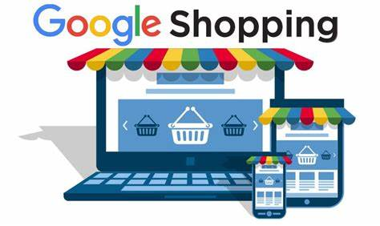
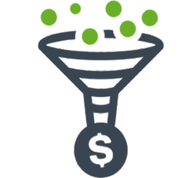
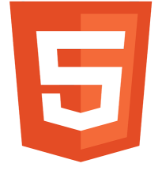

Chi sono?
Sono Jacopo Anania, ho 35 anni e lavoro nel settore della ristorazione ma ho iniziato da qualche
anno a
formarmi nel settore del digitale.
A inizio pandemia ho scoperto di avere una passione per il funzionamento dei social media, il
digital marketing e la programmazione di siti web.
Così ho iniziato a fare svariati corsi su questi campi accrescendo sempre di più le mie competenze.
Ho seguito svariati corsi tra cui:
- Corso sul social media marketing, HTML e CSS sulla piattaforma di formazione online Udemy,
- Corso ufficiale sul social media marketing di Google,
- Attualmente studente di Social Media e Digital Marketing sulla piattaforma di formazione online Start2impact.
Attualmente sono alla ricerca di un impiego nel settore del mondo digitale per mettere alla prova le
mie nuove competenze e per accrescerle ulteriormente.
Portfolio
Da circa un anno ho iniziato a formarmi su vari settori sulla piattaforma Start2impact.
Di seguito è possibile consultare alcuni dei progetti che ho completato con i voti più alti e che
reputo degni di attenzione, attualmente sono il n.61 nella top 100 degli studenti in Italia
di Start2impact.
- Progetto finale Digital Marketing
- Progetto Facebook ADS
- Progetto LinkedIn per le aziende
- Progetto Video Editing
 Progetto Automazioni
Progetto Automazioni
-  Progetto Google ADS shopping
Istruzione e formazione
Istruzione
La mia formazione scolastica è stata completata presso l'Istituto Paolo Boselli di Savona
nel corso di studi di Ragioniere Programmatore con la votazione di 70/100.
Durante gli anni di scuola superiore ho conseguito l'ECDL che mi ha permesso di ottenere un ottima
conoscenza
del pacchetto Office, di Windows e dell'utilizzo del PC in generale.
Caratteristiche
Durante le mie varie esperienze lavorative ho imparato a lavorare sotto pressione, collaborare in team,
ho sviluppato una buona capacità di problem solving e una forte determinazione a raggiungere gli
obbiettivi.
Formazione
Di seguito è possibile consultare una lista di tutti i corsi che ho seguito, di cui ho completato con
successo il test teorico e il progetto pratico
presso la piattaforma Start2impact.
| Excel | |
| Automazioni | |
| Mail Marketing | |
| Google Display e Discovery | |
| Google ADS | |
| Google Analytics 4 | |
| Video Editing | |
| LinkedIn per le Aziende e Personal Branding | |
| Facebook ADS | |
|  | Funnel |
| Social Media | |
| Photo Editing | |
|  | HTML |
| CSS |
Esperienze lavorative
Da 6 anni ad oggi lavoro presso il Bar Milano come barista specializzato in caffetteria in seguito
al conseguimento dell'attestato SCAE come barista professionista.
Il ruolo ricoperto consiste nel
gestire principalmente il lavoro diurno occupandosi saltuariamente delle aperture, di gestire alcuni colleghi durante
il servizio, preparare le colazioni, gestire la cassa e effettuare gli ordini di alcuni fornitori.
Mi occupo anche della gestione della pagina social e della veste grafica dei menù.
Ho collaborato con la Miro Srl di Loano per 4 anni in veste di rappresentante plurimandatario per la vendita
di prodotti per il settore Ho.Re.Ca., per la pasticceria e la gelateria.
Il mio lavoro ebbe inizio con circa 20 clienti e un fatturato di circa 25.000 euro, al termine della
mia collaborazione avevo un portafoglio di 120 clienti attivi e finanziariamente solidi con un fatturato totale di
circa 250.000 euro annui costanti.
Grazie agli anni passati in ristorazione mi era piuttosto facile entrare in empatia con il potenziale cliente
comprendendone esigenze e difficoltà.
Dopo circa un paio di anni iniziai a ricoprire il ruolo di capo area per la zona Genova-Nizza per
aiutare e formare alcuni colleghi e nuove assunzioni.
Questa esperienza mi ha aiutato ad autogestire e organizzare il mio lavoro oltre a
mettermi alla prova nel mercato Francese grazie al quale ho potuto accrescere le mie capacità
linquistiche per quanto riguarda la lingua inglese parlata e scritta portandole ad un buon livello.
Ho avuto anche una piccola esperienza nel campo digitale presso la Zodiak di Genova per circa 1 anno
in cui facevo parte di un team per il lancio del progetto community di Vodafone.
Il compito mio e del team era quello di moderare a 360° i contenuti della community controllando che
non ci fossero violazioni del codice di comportamento.
Durante queste esperienze che reputo le più formative ho avuto svariati impieghi in diversi settori
che hanno ampliato le mie conoscenze e permesso di conoscere tanti modi diversi di lavorare.
Contatti
Anania Jacopo
Via delle Canisse 6/6
16016 Cogoleto (GE)
348 830 73 83